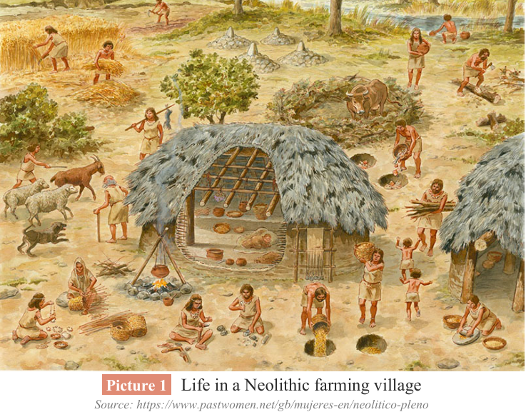
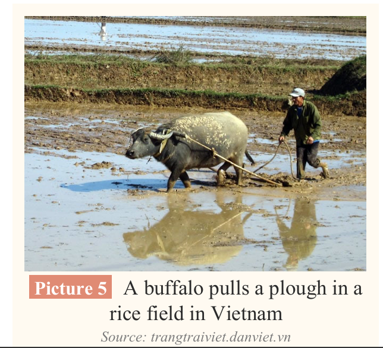

Farming Changes the World
The first farmers of the Neolithic period and how they shaped human history
- Where and when the first farmers lived
- How farming changed the land, food, tools and jobs
- Why farming was a turning point in history
- Using the past simple to talk about the past
- Regular and irregular past verbs
- Comparing farming in the past and today
Warm-up: Look at Picture 1
Look carefully at the Neolithic farming village in Picture 1. Click the items you can find (watch out—two items do NOT belong in the Stone Age!):

neolithic_farming_village.png) isn't showing yet. Pick it from your device to preview:
1. What jobs are the people doing? (e.g., "I think this woman is cutting wheat.")
2. Is this village very old or modern? How do you know?
No posts yet—be the first pair to share your answer!
1. Farming Words
Match the words (1–6) to their meanings (a–f). Then find them in the reading text (and check the Glossary at the end of the lesson).
2. Reading: Farming Changes the World
Intro (Paragraph 1): For a very long time, people did not have farms. They hunted wild animals and gathered fruit, nuts and seeds from wild plants. They moved from place to place to find food. Then, about 11,000 years ago, something very important happened: people began to grow their own food. This was the start of the Neolithic period. How did farming change the way people lived? What did they eat, and what work did they do?
Part A Where and when were the first farmers?
A1: The first farmers lived in Mesopotamia, a land between two big rivers, the Tigris and the Euphrates (Picture 2). Today, this area is part of Iraq and Syria. The land near the rivers was flat and fertile, and there was a lot of water, so it was a good place to grow crops.
A2: The first farmers planted grain crops such as wheat and barley. They also grew peas, lentils and flax. They ate the peas and lentils, and they used flax to make cloth for their clothes.
A3: At the same time, people began to domesticate animals. Before, they hunted wild sheep, goats, cows and pigs. Now they kept these animals on their farms, so they had meat and milk all year. However, farmers did not stop hunting completely. They still hunted wild animals, caught fish and collected fruit and nuts.
A4: Farming spread very slowly from Mesopotamia to other places. It reached the south of Europe about 2,000 years later.

picture2.png) not loaded yet.

picture3.png) not loaded yet.
🗺️ Map Task: Find Mesopotamia (Iraq and Syria), Europe, and Vietnam on Picture 3. Is Vietnam near or far from the first farms?
Part B Changing the land
B1: Farmers changed the land around them. They cut down trees and cleared the land to make fields for their crops. Their animals ate the wild plants and grass. To bring water to the fields, farmers dug long water channels from the river. Some farmers built a dam across a river to keep and store water.
B2: In places with hills, farmers made terraces. Terraces are flat steps of land on the side of a hill, so the rain does not wash the soil away. Farmers in Vietnam still grow rice on terraces today (Picture 4).

picture4.png) not loaded yet.
Part C Changing food
C1: Because people grew their own grain, they had more food. Farmers ground wheat and barley between two stones to make flour, and then they made bread and porridge. Their animals gave them meat and milk. Food was now easier to find, so families did not need to move any more. They built houses and lived together in villages (like the village in Picture 1).
Part D New tools and technology
D1: Farming led to new inventions. Later, farmers invented the plough, a tool that breaks up the soil so seeds can grow. Strong animals, such as cows, pulled the plough, so farmers could prepare a big field quickly. Some farmers in Vietnam still use buffaloes to plough their rice fields (Picture 5).
D2: Stone tools also got better. People polished their stone axes and blades, so they were smooth and sharp and cut better (Picture 6).
D3: People also learned to make pottery. They shaped wet clay into pots and bowls, and then they baked them in a fire to make them hard. They used the pots to store grain, water and milk (Picture 7).
D4: Farmers also made textiles. They made linen from flax, and they used wool from sheep and goats to make warm clothes.

picture5.png) not loaded yet.

picture6.png) not loaded yet.

picture7.png) not loaded yet.
Part E New jobs
E1: In a farming village, there were many different jobs. Some people looked after the animals, and others worked in the fields. Some people became very good at making pots, so pottery became their special job. Sometimes a village grew more food than it needed. People traded the extra food with other villages for things they did not have, such as tools, special stones or animals. In this way, trading became another new job.
3. Check Your Understanding
Task A Complete the fact file (Use information from Part A)
| Fact file: the first farmers | Your answers |
|---|---|
| Where? | Mesopotamia (today: ) |
| When? | years ago |
| Why was it a good place? | |
| Crops | wheat, |
| Animals | |
| Food they still collected |
Task B Complete the timeline
Farming started in:
What happened?
What did people make?
Some farmers in Vietnam still use:
Task C Complete the mind map (How did farming change people's lives?)
Use information from Parts B–E. Write 2 more ideas in each box (max. 5 words each).
🌲 The land
- • They cut down trees.
🍞 Food
- • They made bread.
🛠️ Tools and technology
- • They invented the plough.
🧑🌾 Jobs
- • Some people made pots.
Task D Be a good historian
| ⏪ Before farming, people... | ⏩ After farming, people... |
|---|---|
| moved from place to place. | lived together in villages. |
| hunted wild animals. | |
| gathered wild seeds. | |
| made pots and cloth. |
4. Language Focus: The Past Simple
1 Find all 37 past-tense verb forms
Read the reading text carefully and type all 37 past simple verb forms from the text (separated by commas or spaces). Once you find and check all 37, Exercise 2 will unlock!
2 Regular or irregular? (Drag & Drop)
Drag all 37 past simple forms into the matching column (or click a word, then click a column). Any order inside a column is fine!
2B Unlocked! Write the bare form (base verb)
Great sorting! Now type the bare form (base verb) for all 37 past-tense forms from the reading text.
📘 Remember: The Past Simple
plant → planted, live → lived, carry → carried, stop → stopped
grow → grew, make → made, keep → kept
Negative: did not + base verb (They did not stop hunting.)
Question: What did they eat?
3 Choose the correct answer
1. The text is mainly in the past simple because...
2. "Today, this area is part of Iraq and Syria." The writer uses is, not was, because...
3. Which words tell us when in the past?
4. "Farmers did not ______ hunting."
5. Which question is correct?
5. Practice
5A Starting a Stone Age farm
Complete the text. Write the past simple of the verb in brackets, then choose a farming word from the box.
(One word in the box is extra!)
5B Speaking: Interview a Neolithic farmer
Work in pairs. Student A is a reporter; Student B is a farmer from 10,000 years ago. Make questions with did and answer together, then swap roles:
| Student A: Questions | Student B: Answers |
|---|---|
| Where / you / live? → Where did you live? | I lived in Mesopotamia, near the river. |
| What crops / you / grow? | |
| What animals / you / keep? | |
| What / you / eat? | |
| How / you / make your clothes? | |
| you / still / hunt? |
6. Project: Farming in the Past and Today (Groups)
Make a short video or an infographic to compare farming in the Neolithic period with farming in Vietnam today.
- 1. Choose two farms in Vietnam: Choose one farm with modern technology and one farm with simple tools. Find out where they are (city or province), what they grow, what tools or machines they use, and what jobs people do there.
- 2. Collect your information in a chart: Compare Neolithic farmers (11,000 years ago), Farm with simple tools today, and Farm with modern technology today across Where?, Crops, Animals, Tools/technology, Water, and Jobs.
- 3. Same or different? Sort your ideas into Only in the past, In the past AND today, and Only today.
- 4. Useful language: Neolithic farmers used stone tools. They did not have machines. • Farmers in An Giang use machines to cut rice. • In the past... but today... • Both... and...
- 5. Checklist: Compared crops, animals, tools, water and jobs • Used the past simple for the past and present simple for today • Used at least 6 farming words • Added pictures with captions.
Glossary: Key Words, Meanings, Pictures & Audio
Review each word's definition, Vietnamese meaning, example sentence, picture, and audio pronunciation at the end of the lesson.
Definition: To grow plants and raise animals for food; an area of land used for this.
Example: People began to farm the land about 11,000 years ago.

farm.png not found yet.
audio/farm.mp3
Definition: A plant that farmers grow in large amounts for food or other uses.
Example: Farmers grew crops such as wheat, barley, and rice.

crop.png not found yet.
audio/crop.mp3
Definition: Small, hard seeds from cereal plants like wheat, barley, or rice.
Example: Villagers ground grain between two stones to make flour.

grain.png not found yet.
audio/grain.mp3
Definition: To tame wild animals and breed them so they can live with people.
Example: Early farmers domesticated sheep, goats, cows, and pigs.

domesticate.png not found yet.
audio/domesticate.mp3
Definition: Rich in nutrients and good for growing healthy plants and crops.
Example: The soil near the two rivers was flat and fertile.

fertile.png not found yet.
audio/fertile.mp3
Definition: A tool pulled across soil to turn it over before planting seeds.
Example: Strong animals pulled the plough through the fields.

plough.png not found yet.
audio/plough.mp3